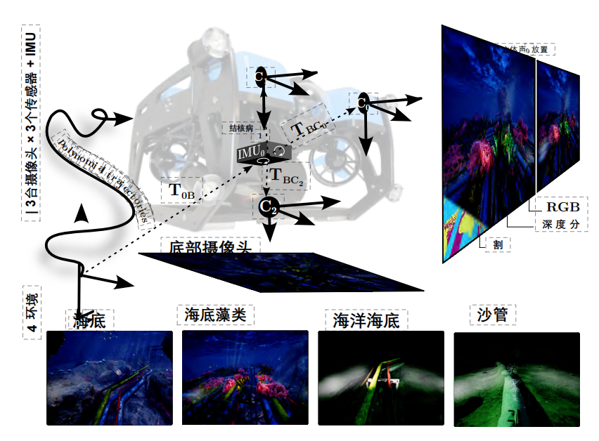
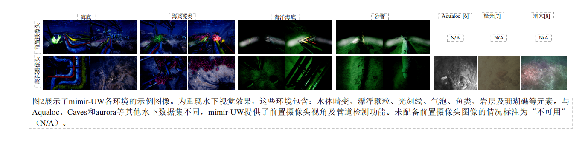
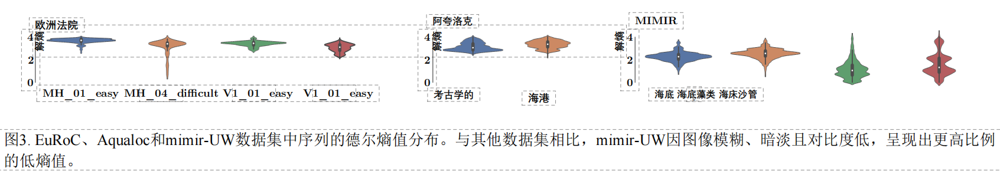
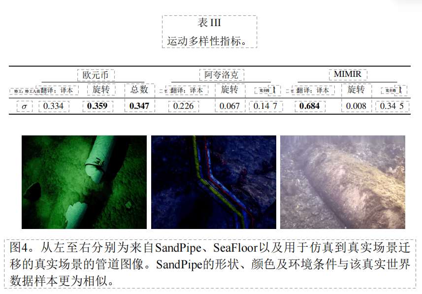

mimir-UW：一个用于水下导航与检测的多功能合成数据集---
title: MIMIR-UW：一个用于SLAM、深度估计和物体分割的多功能水下合成数据集 authors: 奥拉娅·阿尔瓦雷斯-图农、赫曼斯·坎纳、卢伊扎·里贝罗·马内特、胡伊·玄·范、乔纳斯·勒费弗尔·塞杰森、尤里·布罗德斯基、埃尔达尔·卡亚坎
奥拉娅·阿尔瓦雷斯-图农、赫曼斯·坎纳、卢伊扎·里贝罗·马内特、胡伊·玄·范、乔纳斯·勒费弗尔·塞杰森、尤里·布罗德斯基以及埃尔达尔·卡亚坎
摘要
本文提出了MIMIR-UW，这是一个多功能水下合成数据集，适用于SLAM、深度估计和物体分割任务，旨在弥合理论与水下环境应用之间的差距。MIMIR-UW整合了三种相机传感器、惯性测量数据以及机器人姿态、图像深度和物体分割的地面真实数据。该水下机器人被部署在管道探测场景中，携带人造光源以产生不均匀光照，并包含自然光反射和后向散射效应等真实场景特征。数据集提供了四种环境共十一条轨迹，具有不同的光照条件或动态元素难度等级。本文提出了两项数据集评估指标，便于将MIMIR-UW与其他数据集进行比较。研究在MIMIR-UW上部署并测试了当前最先进的SLAM、分割和深度估计方法。此外，通过在真实管道检测场景中应用基于MIMIR-UW训练的分割和深度估计模型，验证了该数据集在模拟-真实场景迁移方面的潜力。据作者所知，这是首个针对如此多种方法的水下数据集。该数据集可在线公开获取：https://github.com/remaro-network/mimir-UW/
I. 引言

尽管模拟器和数据集在开发计算机视觉算法中至关重要，但多种因素限制了它们在水下场景中的应用。例如，水下环境中的强烈信号衰减阻碍了最先进真实姿态与运动捕捉设备的使用；此外，生成用于图像分割的真实数据需要针对特定对象进行专门化处理，例如珊瑚、鱼类物种及管道损伤等场景；部署区域的可及性也是另一个关键制约因素。海上结构物适合部署水下机器人，因为这类设施需要定期接受检查[1]。然而在石油天然气行业中，主要所有者出于隐私和安全考虑，通常不愿公开其数据供公众使用。
与基于几何的定位方法不同，基于学习的定位算法会受到成像条件多样性和相机运动模式的影响。同样地，其他学习方法（如分割和深度估计）也需要多样化的成像条件才能实现泛化能力。目前主流的同步定位与地图构建（SLAM）、图像分割及深度估计技术主要依赖地面或空中设备实现，但这些设备的性能受限于其模型的动态特性及环境条件。要将计算机视觉领域的深度学习技术应用于水下环境，就必须具备适应此类特殊环境的数据集。
在上述水下环境数据采集固有困难的背景下，模拟器是生成数据集的一种可行替代方案。逼真的模拟渲染技术已使模拟到现实的转换成为机器人学中的基础学科[13][14]。然而，针对水下成像条件的逼真模拟[15][16]尚未被整合到主流开源机器人模拟器中[17]-[19]。不过，开源3D生成工具Unreal Engine提供了具备逼真图像渲染功能的框架，通过集成外部插件[20][21]，可为机器人模拟提供支持。AirSim插件[21]提供了用于采集姿态、分割及深度估计真实数据的API，并支持Robot Operating System（ROS）集成。
本文提出了一种基于Unreal Engine和AirSim构建的水下合成数据集，适用于管道检测场景（见图1）。本文的贡献如下：
- 一个用于定位、分割和深度估计的合成数据集。该数据集是在四种水下场景下采集的，涵盖不同的运动轨迹和光照条件以及动态元素的存在。
- 引入用于定量描述数据集特征的指标。
- 采用最先进的SLAM、分割及深度估计算法进行实验评估。该数据集在真实管道检测场景下，验证了基于学习的分割与深度估计方法向实际应用场景迁移的能力。
据我们所知，这是首个包含如此丰富标注数据及管道检测场景的水下数据集。通过这种方式，我们旨在简化算法测试流程，并借助模拟到真实场景的迁移技术，推动基于学习的计算机视觉算法在水下环境中的发展。
本文的结构如下：第II节介绍数据集收集的相关研究；随后，第III节阐述MIMIR-UW及数据收集流程；第IV节提出数据集比较的评估指标；第V节展示该数据集在所提出的基线算法下的适用性；最后，第VI节总结本研究的主要结论。
II. 相关工作
深度学习方法对海量数据的高要求，以及水下环境对机器人部署带来的严峻挑战，近期推动了水下机器人模拟器和数据集的开发。然而，成像条件的模拟仅限于指数衰减或阳光反射[15][17][18]，这使得它们不足以用于计算机视觉系统的测试。公开可用的水下计算机视觉数据集涵盖多种场景，从目标检测[22][23]到图像分割[10]-[12]以及定位[6]-[8]。定位算法的真值获取在水下环境尤为困难，因此可用于视觉定位的数据集十分有限。具体而言，Aqualoc数据集提供了来自Colmap库的估算真值[6]；而EuRoC[3]、KITTI[2]、TUM-RGB-D[4]和ETH-MS[5]等知名数据集已被广泛用于算法基准测试。TartanAir[9]引入了一个包含多种环境的合成数据集，这些环境呈现出具有挑战性的成像条件。
表1 用于SLAM、图像分割和深度估计的最先进数据集对比
| 数据集 | 类型 | 环境 | 姿态 | 分割 | 相机 | 深度 | 感知混叠 | 动态场景 |
|---|---|---|---|---|---|---|---|---|
| KITTI [2] | 真实 | 城市 | ✓ | × | 立体 | ✓ | × | ✓ |
| EuRoC [3] | 真实 | 室内 | ✓ | × | 立体 | × | × | × |
| TUM-RGB-D [4] | 真实 | 室内 | ✓ | × | RGB-D | ✓ | ✓ | ✓ |
| ETH-MS [5] | 真实 | 室内/室外 | ✓ | × | 立体 | × | × | × |
| Aqualoc [6] | 真实 | 水下 | ✓ | × | 单目 | × | ✓ | ✓ |
| Aurora [7] | 真实 | 水下 | ✓ | × | 单目 | × | ✓ | ✓ |
| Caves [8] | 真实 | 水下 | ✓ | × | 单目 | ✓ | ✓ | ✓ |
| TartanAir [9] | 合成 | 多种 | ✓ | ✓ | 单目 | ✓ | × | ✓ |
| TrashCan [10] | 真实 | 水下 | × | ✓ | 单目 | × | N/A | N/A |
| SUIM [11] | 真实 | 水下 | × | ✓ | 单目 | × | N/A | N/A |
| NAUTEC UWI [12] | 真实 | 水下 | × | ✓ | 单目 | × | N/A | N/A |
| MIMIR-UW（我们的） | 合成 | 水下 | ✓ | ✓ | 立体 | ✓ | ✓ | ✓ |
III. MIMIR-UW：多功能数据集
A. 数据收集
所提出的数据集采集自Unreal Engine 4中创建的四个水下环境，分别称为"海底"（SeaFloor）、"海底藻类"（SeaFloorAlgae）、"洋底"（OceanFloor）和"沙管"（SandPipe），用于管道检测场景。图2展示了记录图像的样本。如表II所示，每个环境中均记录了多种轨迹，其长度和持续时间各不相同。在所有环境中，机器人携带两盏人工光源，导致场景中产生不均匀的光反射。SeaFloor呈现为浅水环境，能见度良好，但存在自然光产生的动态光反射；SeaFloorAlgae在SeaFloor环境的基础上增加了场景中动态物体浓度较高、会遮挡管道的挑战；OceanFloor则为深水环境，大部分可见度来源于机器人的人工光源。同样地，SandPipe也模拟了深水环境，但其管道表面覆盖着沙子，仅在运动轨迹的某些区域露出部分表面。
表2 MIMIR-UW的实际应用方面
| 环境 | 序列 | 时长[秒] | 路径长度[米] | 帧数 | 姿态数 |
|---|---|---|---|---|---|
| SeaFloor | Track0 | 120.840 | 238.623 | 2847 | 1992 |
| SeaFloor | Track1 | 89.693 | 191.460 | 2030 | 1420 |
| SeaFloor | Track2 | 109.157 | 244.969 | 2537 | 1775 |
| SeaFloorAlgae | Track0 | 125.823 | 249.013 | 2934 | 2053 |
| SeaFloorAlgae | Track1 | 89.753 | 186.586 | 2076 | 1452 |
| SeaFloorAlgae | Track2 | 107.696 | 245.851 | 2489 | 1741 |
| OceanFloor | Track0 | 107.843 | 226.698 | 2421 | 1694 |
| OceanFloor | Track1 | 107.603 | 227.482 | 2404 | 1682 |
| OceanFloor | Track2 | 279.132 | 714.786 | 6263 | 4383 |
| SandPipe | Track0 | 120.891 | 298.885 | 2741 | 1918 |
| SandPipe | Track1 | 117.810 | 294.957 | 2605 | 1823 |
 |
1）传感器数据与真实值采集
该数据集通过三台摄像头进行记录：两台采用立体构型的前向摄像头和一台向下拍摄的摄像头。每台摄像头包含三个数据源——RGB图像、分割图及深度信息，均通过AirSim图像API获取。分割标签由AirSim图像API自动生成。每张RGB图像均对应一个分割图像，其中每个像素点的颜色均标注了其所属物体类别。系统共包含14个类别：动态物体（如鱼类、气泡和藻类）以及静态物体（包括管道、岩石、海底和天空）。AirSim图像API提供的深度信息以浮点数形式存储，数值单位为米；所有位于相机平面平行面上的点位均获取相同的深度值。为提升存储效率，这些深度数据会被转换并存储为逆深度图像。对于记录值为零的情况，逆深度图像中相应位置仍保留零值，以避免除零错误。AirSim的API还能获取惯性测量数据及姿态真实值，这些数据同样包含在数据集中。对于每条轨迹，我们提供了记录该轨迹时使用的AirSim设置文件，以及各摄像头的本征参数与外参数。
2）轨迹生成
该数据集由模拟水下机器人根据一组航点生成的轨迹进行记录。这些航点的选择旨在生成能够确保在给定环境中运动多样性的轨迹，并从不同视角重新访问相同区域以实现闭环。最小捕捉轨迹生成方法可生成连接航点的平滑轨迹[24]；这些轨迹通过描述四维状态（对应三个线性轴及机器人相对于时间的航向）的10次多项式函数生成。为简化处理，对这些轨迹的跟踪可简化为一个通用的质点控制问题。
IV. 数据集指标
本节提出了一套测量指标，用于定量评估数据集的特性，并将其与现有数据集进行比较。所提出的指标能够衡量特定算法类别数据的复杂度，从而使得算法基准测试更具统一性。
A. 图像熵
我们依赖熵来量化每幅图像所包含的信息量。图像的空间信息通过[25]中推导出的各向同性公式被纳入香农二阶熵计算之中。
考虑一个离散带限信号 $f$，其在 $x$ 和 $y$ 轴上分别包含 $2N \times 2M$ 个样本。该信号的导数 $f_x$ 和 $f_y$ 是通过对图像应用卷积Sobel算子获得的。随后，利用克罗内克 $\delta$ 函数 $\delta_{i,j}$ 计算信号导数的联合概率密度函数 $p_{i,j}$，具体表达式为：
因此，香农的联合熵公式可得出德尔熵（delentropy）如下：
当 $p_{i,j}$ 呈均匀分布时，delentropy值达到最大。这表明图像中存在非显著特征，可能导致分割过程中像素被误分类，或在基于特征的定位中出现特征不匹配的情况。相反，对于缺乏分割分类或定位跟踪所需信息的零梯度图像，其熵值会降至最小。因此，所提出的计算机视觉流程的理想条件应处于delentropy的中间数值区间。
B. 运动多样性
为评估数据集中运动模式的多样性，本文采用了[9]中提出的指标，该指标基于运动模式的主成分分析。给定序列 $n$ 个拼接后的相对平移 $T \in \mathbb{R}^{3n}$ 和旋转 $R \in \mathbb{R}^{4 \times 4n}$，通过奇异值分解计算其主运动分量。获得的特征值 $(t_1, t_2, t_3)$ 和 $(r_1, r_2, r_3)$ 及其对应的特征向量分别表示该序列的第一、第二和第三主运动轴及其幅值。
运动多样性指标可按以下公式计算：
当运动均匀分布时，特征值会取得相等数值，从而使运动多样性指标收敛至某一稳定值。反之，若一个或两个次级轴上均无运动，则其特征值为零，因此运动多样性指标亦为零。

C. 结果
本次数据集对比对象为EuRoC和Aqualoc：两者均采集自移动平台，其自由度与MIMIR-UW相当。Aqualoc包含在真实环境中录制的水下序列。尽管EuRoC是在水面以上录制的，但它是一个成熟的数据集，可用于比较水下与水面环境下的成像条件差异及其对所提出评估指标的影响。
delentropy结果如图3所示。与简单序列相比，EuRoC中复杂的序列通过暗色或模糊图像产生的delentropy值较低。考虑到EuRoC和Aqualoc序列具有更高的纹理和对比度，其delentropy值集中在比MIMIR-UW更高的区间。MIMIR-UW的OceanFloor和SandPipe序列包含极暗图像（仅显示场景中的邻近元素）以及完全黑暗且无任何邻近物体的图像，因此产生了大量低delentropy值。SeaFloorAlgae序列因藻类丰富的纹理特征，为MIMIR-UW提供了最高的熵值。
表3 运动多样性指标
| 数据集 | 平移多样性 | 旋转多样性 | 综合多样性 |
|---|---|---|---|
| EuRoC | - | - | 0.28 |
| Aqualoc | - | - | 0.01 |
| MIMIR-UW | - | - | 0.29 |
Aqualoc的运动多样性值最低，因为该移动机器人仅在xy平面内移动（见表III）。MIMIR-UW的运动轨迹设计旨在最大化线性轴上的多样性，在平移指标上优于EuRoC；而总体而言，EuRoC与MIMIR-UW的运动多样性指标相近。然而，EuRoC在旋转维度上表现出更高的多样性。
V. 实验评估
本节对MIMIR-UW在SLAM、深度估计及物体分割算法方面所面临的挑战与机遇进行了实验性评估。此外，我们采用了一个真实管道检测场景的样本数据集（如图4所示），以展示MIMIR-UW在从仿真到实际应用迁移中的能力。
A. SLAM
为展示所提供数据集对SLAM算法的挑战，我们分别以单目和立体方式运行ORB-SLAM3[27]。ORB-SLAM是当前最先进的间接视觉SLAM算法之一。早期版本ORB-SLAM失败的主要原因之一是轨迹丢失及后续重定位失败。然而自ORB-SLAM3起，其后端集成了所谓的Atlas地图：每当轨迹丢失时，系统会初始化新的"主动"地图，并将原有地图存储在内存中转化为"被动"地图。在运行过程中，后端会在主动地图和可用被动地图集合上同时搜索环闭合路径。鉴于MIMIR-UW中的轨迹设计专门用于环闭合检测，Atlas地图为此提供了值得深入分析的独特特征。
另一方面，数据集中存在的散射区域和低纹理区域对依赖特征跟踪的间接方法（如ORB-SLAM）构成挑战。在此类场景下，基于直接方法的SLAM技术尤为值得关注——该方法通过优化围绕相机变换或深度图逆向参数的聚合光度误差来实现定位精度提升。因此，采用了基于直接法的SLAM算法DSO[28]，该算法通过选择梯度较高的像素进行光度误差计算，从而实现实时性能。
关键帧相机姿态下，估计轨迹与真实轨迹之间的偏差通过绝对位置误差（APE）和相对位置误差（RPE）进行评估[4]。APE与RPE分别用于量化轨迹的整体一致性与局部一致性。

表4 SLAM算法在MIMIR-UW中的部署结果
| 环境 | 序列 | ORB-SLAM3（单目） | ORB-SLAM3（立体） | DSO |
|---|---|---|---|---|
| ATE[m] | RPE[m] | 时长[秒] | ||
| SeaFloor | Track0 | 3.67 | 0.13 | 34.8 |
| SeaFloor | Track1 | 8.78 | 0.19 | 64.5 |
| SeaFloor | Track2 | 5.18 | 0.142 | 40.2 |
| SeaFloorAlgae | Track0 | 2.99 | 0.122 | 31.27 |
| SeaFloorAlgae | Track1 | 1.15 | 0.134 | 53.8 |
| SeaFloorAlgae | Track2 | 9.16 | 0.144 | 53.11 |
| OceanFloor | Track0 | 5.78 | 0.523 | 11.3 |
| OceanFloor | Track1 | 8.37 | 0.214 | 26.7 |
| OceanFloor | Track2 | 23.66 | 0.286 | 64.4 |
| SandPipe | Track0 | 20.084 | 0.184 | 83.7 |
| SandPipe | Track1 | 6.85 | 0.0764 | 76.7 |
对于单目观测装置，轨迹采用[29]中所述的最小二乘法对齐进行缩放和校准。每条轨迹均进行了十次测试，其结果的中位数值列于表IV。
MIMIR-UW包含了许多极具挑战性的序列，这些序列会导致跟踪失败。因此，本文仅展示了DSO的成功率（SR）。SR的计算方式为：在总共进行的十次测试中，成功完成的跟踪次数占总次数的比例。由于ORB-SLAM无法完成某些序列，本案例中提供了每个成功获取估计值的平均耗时。DSO在能够顺利完成的序列中表现更优。纹理丰富且delentropy值较高的序列（如SeaFloor和SeaFloorAlgae）比纹理较低的序列（如OceanFloor）误差更小。尽管直接SLAM方法在低纹理区域表现更佳，但在暗色序列中情况并非如此——暗色序列仅能显示附近物体，这会导致更高的相对运动，进而产生更大的视差，而这正是直接SLAM失败的主要原因。虽然ORB-SLAM对视差的影响较小，但图像特征的缺失使得跟踪失败更为频繁。立体视觉系统虽然不易发生跟踪丢失，但其误差却出乎意料地更高。
B. 分割
MIMIR-UW提供的语义分割标签已被用于训练和评估两个管道分割网络。为此选定的网络分别是DeepLabV3[30]和全卷积网络（FCN）[31]。FCN通过用卷积层替代分类网络中的全连接层，并对输出进行上采样以恢复输入维度，从而实现了对预训练分类网络进行微调以应用于分割任务。DeepLabV3通过采用扩张卷积技术解决了卷积层导致的空间信息损失问题——该技术能够在不牺牲空间分辨率的前提下，更有效地捕捉语义上下文信息[32]。
两个网络均采用ResNet50作为主干架构，并使用ImageNet预训练权重。网络通过Adam优化器以0.0001的学习率进行微调，损失函数采用交叉熵损失函数。模型最多训练50个周期，若验证集上的平均交并比（mIoU）连续六个周期未提升，则提前终止训练。在MIMIR-UW数据集中，管道约占所有图像总像素数的10%。对于训练集，每个类别的权重与其在图像中占据的像素数量成反比。为避免数据冗余，每条轨迹中选取第五张图像。所使用分割评估指标包括mIoU和像素平均准确率（mean Acc）。
表5 使用MIMIR-UW训练的分割网络测试结果
| 实验名称 | 数据分割 | 序列（轨道）[摄像头] | FCN | DeepLabV3 |
|---|---|---|---|---|
| mean Acc | mIoU | |||
| SeaFloor | 训练集/验证集(80/20)% | SeaFloor[0,1][cam0] → SeaFloor[2][cam0] | 0.876 | 0.785 |
| SandPipe | 训练集/验证集(80/20)% | SandPipe[dark][cam0] → SandPipe[light][cam0] | 0.643 | 0.445 |
| All | 训练集/验证集(80/20)% | SandPipe, SeaFloor, OceanFloor[all][cam0] → SeaFloorAlgae[all][cam0] | 0.838 | 0.700 |
| S2R - SandPipe | 训练集/验证集(80/20)% | SandPipe[light][cam2] → Real Pipeline | 0.552 | 0.413 |
| S2R - 增强型SandPipe | 训练集/验证集(80/20)% | SandPipe[light][cam2] → Real Pipeline | 0.712 | 0.601 |
| S2R - 增强型SeaFloor | 训练集/验证集(80/20)% | SeaFloor[light][cam2] → Real Pipeline | 0.577 | 0.440 |
SeaFloor实验中的模型仅使用SeaFloor环境的轨迹进行训练，并针对同一环境中未见过的轨迹进行测试。尽管属于不同轨迹，但数据分布的相似性使得两种分割网络均取得了良好效果。SandPipe实验则使用SandPipe环境的轨迹，在暗光序列下训练并在明光条件下测试。尽管数据分布相似，该模型的表现仍逊于SeaFloor。一个可能的原因在于不同的光照条件会影响物体在图像中的外观，从而导致同一管道模型产生不同的数据分布。
All实验涵盖了数据集中的所有轨迹。此处，SeaFloorAlgae仅用于测试，而其他所有环境均用于训练和验证。覆盖管道的藻类构成了一个未预见的数据元素，在训练过程中模型性能会受到挑战。尽管如此，实验结果与SeaFloor实验的结果非常接近，这表明该方法能够为训练数据分布提供高度多样性。
模拟到真实（S2R）实验旨在利用真实管道检测数据集作为测试集，展示MIMIR-UW在模拟到真实迁移中的潜力。首个S2R测试使用SandPipe数据集进行。正如数据分布差异所预期的那样，实验结果表明其性能远低于仅使用模拟数据进行的实验。为了使模拟管道的外观更接近真实管道，通过对SandPipe数据集的训练集和验证集进行随机翻转以及亮度、对比度和饱和度的随机调整来增强数据集。如表V所示，增加管道外观的多样性显著提升了模型的性能。最终的S2R实验使用SeaFloor数据集进行，采用了与前述实验相同的增强技术。结果表明，尽管采用了增强策略，训练集与测试集数据分布之间的高度差异仍会对模型性能产生负面影响。
实验结果表明DeepLabV3具备编码空间信息的能力，使其在几乎所有场景下均优于FCN。这些实验凸显了MIMIR-UW在探索分割领域开放性挑战方面的潜力，例如跨环境泛化能力、仿真到真实场景的迁移能力，以及在低光照（因而低delentropy）环境（如SandPipe）下的表现。
C. 深度估计
通过评估两种基于学习的深度估计方法——Monodepth2[33]和MonoRec[34]在所提出的数据集及真实场景流程数据集上的性能，证明了MIMIR-UW在水下深度估计中的适用性。
Monodepth2采用U-net架构[35]进行多尺度深度估计，该网络以单张RGB图像作为输入，通过优化每个像素的最小重投影误差并屏蔽不符合光度一致性特征的像素，来预测均值归一化的逆深度图像。MonoRec框架包含三个模块：负责编码几何信息的成本体积模块、预测光度不一致性掩码的掩码模块，以及生成逆深度图像的深度模块；其中掩码模块与深度模块均采用遵循U-net架构的神经网络[35]。该框架可接收共享视锥视角的任意数量RGB图像、它们之间的姿态变换参数，以及由运动结构处理流程生成的相机内参信息。
网络在MIMIR-UW和KITTI[2]的子集上进行训练，以体现水下与水上数据训练之间的差异。基于KITTI训练的场景由通讯作者公开提供[33][34]。在Monodepth案例中，采用图像分辨率为 $640 \times 192$ 的单目与立体数据训练的模型；用于逆深度预测均值归一化的最小深度与大深度分别设置为0.003米和80米。所使用的MonoRec模型为第一阶段深度自助法训练模型，其训练图像分辨率为 $512 \times 256$。
表6 MIMIR-UW上的深度估计实验
| 环境 | 序列 | MonoRec (MIMIR) | MonoRec (KITTI) | Monodepth2 (MIMIR) | Monodepth2 (KITTI) |
|---|---|---|---|---|---|
| SCInv | AbsRel | SCInv | AbsRel | ||
| SeaFloor | Track0 | 1.076 | 2.759 | - | - |
| SeaFloor | Track1 | 1.054 | 2.341 | - | - |
| SeaFloor | Track2 | 1.160 | 1.792 | 0.7200 | 0.3390 |
| SeaFloorAlgae | Track0 | 1.224 | 3.071 | 1.027 | 0.7697 |
| SeaFloorAlgae | Track1 | 1.027 | 2.202 | 1.112 | 0.5147 |
| SeaFloorAlgae | Track2 | 1.177 | 1.929 | 1.034 | 0.5657 |
| 真实管道 | - | 1.843 | - | 0.2569 | - |
真实深度与预测逆深度之间的误差通过标准度量指标——尺度不变误差（SCInv）和绝对相对距离（AbsRel）[36]进行量化，结果如表VI所示。
在所有选定的评估数据上，基于MIMIR-UW训练的网络均优于基于KITTI训练的网络。对于MonoRec，在MIMIR-UW上训练时，除SeaFloorAlgae的第1条轨迹外（该轨迹的SCInv略高），两种指标下的误差均更低；这归因于对藻类等可变形物体进行深度测量的难度，并通过SeaFloor与SeaFloorAlgae数据集在MIMIR-UW训练中的AbsRel误差差异得到证实。基于Monodepth训练得出的结果也一致：MIMIR-UW在所有指标上均优于KITTI。
当使用SeaFloor数据进行训练时，两个网络在真实数据上的AbsRel值均低于模拟数据，这表明模拟数据在深度估计任务中可能存在真实数据中不存在的困难。然而，由于每幅深度图像的真实数据具有极高的稀疏性（见图6），无法通过该评估方法在真实数据上验证模拟到真实数据的迁移效果。
在KITTI数据集上训练的网络表现出较大的评估指标误差，说明基于水面以上数据集训练的神经网络难以有效泛化到复杂的水下成像场景。相反，在所提出的合成水下数据集上进行训练后，网络在模拟数据和真实数据上的表现均有所提升，这表明需要采用MIMIR-UW方法。
VI. 结论与未来工作
本研究构建了一个多功能合成水下数据集，可用于开发SLAM、图像分割和深度估计等计算机视觉算法。我们采用delentropy和运动多样性指标来评估数据集所包含的信息量，并以此将MIMIR-UW与其他数据集进行对比。评估结果表明：相较于其他数据集，MIMIR-UW中的图像因光线昏暗且模糊而具有更高的挑战性；低纹理特征与高视差会导致视觉SLAM算法出现失效或漂移现象；类似条件也会对图像分割和深度估计方法造成阻碍。
据我们所知，MIMIR-UW为本文评估的各类方法带来了新的挑战，从而为开发更稳健、更具泛化能力的算法创造了契机。此外，MIMIR数据集还展现出巨大的应用潜力，在分割和深度估计中，模拟到真实数据的转换方法已得到验证。
未来的研究工作包括在整合水下物理机制的完整水下模拟框架内，生成更多样化的水下环境条件、旋转运动以及用于图像分割和光流计算的标注数据。

致谢
本文是在项目REMARO下完成的，该项目获得了欧盟《研究与创新框架计划——地平线2020》的资助（资助协议编号：956200）。感谢EIVA提供真实数据并允许样本图像的公开传播。
参考文献
[1] J. Agbakwuru, "水下能见度差条件下油气管道泄漏检测与修复：挑战与展望," 环境保护杂志, 2012年。
[2] A. Geiger, P. Lenz, and R. Urtasun, "我们是否已准备好迎接自动驾驶？——KITTI视觉基准套件," in 2012年IEEE计算机视觉与模式识别会议, IEEE, 2012年, pp. 3354-3361。
[3] M. Burri et al., "EuRoC微型航空器数据集," 国际机器人研究杂志, vol. 35, no. 10, pp. 1157-1163, 2016年。
[4] J. Sturm, N. Engelhard, F. Endres, W. Burgard, and D. Cremers, "用于评估RGB-D SLAM系统的基准," in 2012年IEEE/RSJ智能机器人与系统国际会议, IEEE, 2012年, pp. 573-580。
[5] 苏黎世联邦理工学院计算机视觉小组与微软苏黎世混合现实与人工智能实验室, "ETH-Microsoft本地化数据集," 2021年。
[6] M. Ferrera et al., "Aqualoc：一个用于视觉-惯性-压力定位的水下数据集," 国际机器人研究杂志, vol. 38, no. 14, pp. 1549-1559, 2019年。
[7] M. Bernardi et al., "Aurora：一个用于机器人海洋探索的多传感器数据集," 国际机器人研究杂志, 2022年。
[8] A. Mallios, E. Vidal, R. Campos, and M. Carreras, "水下洞穴声纳数据集," 国际机器人研究杂志, vol. 36, no. 12, pp. 1247-1251, 2017年。
[9] W. Wang et al., "TartanAir：一个突破视觉SLAM技术极限的数据集," in 2020年IEEE/RSJ智能机器人与系统国际会议（IROS）, IEEE, 2020年, pp. 4909-4916。
[10] J. Hong, M. Fulton, and J. Sattar, "TrashCan：一个用于视觉检测海洋垃圾的语义分割数据集," arXiv预印本 arXiv:2007.08097, 2020年。
[11] M. J. Islam et al., "水下图像语义分割：数据集与基准测试," in 2020年IEEE/RSJ智能机器人与系统国际会议（IROS）, IEEE, 2020年, pp. 1769-1776。
[12] P. Drews-Jr et al., "基于深度学习的野外水下图像分割," 巴西计算机学会杂志, vol. 27, no. 1, pp. 1-14, 2021年。
[13] H. I. Ugurlu, X. H. Pham, and E. Kayacan, "面向空中机器人安全端到端规划的模拟到真实深度强化学习," Robotics, vol. 11, no. 5, p. 109, 2022年。
[14] H. X. Pham et al., "PencilNet：用于自主无人机竞速中鲁棒门感知的零样本模拟到真实迁移学习," IEEE机器人与自动化快报, vol. 7, no. 4, 2022年。
[15] O. Alvarez-Tunon, A. Jardon, and C. Balaguer, "基于UUVs技术的基础设施视觉检测用模拟水下图像的生成与处理," Sensors, vol. 19, no. 24, p. 5497, 2019年。
[16] Y. Song et al., "深海机器人成像模拟器," in 国际模式识别会议, Springer, 2021年, pp. 375-389。
[17] M. M. M. Manhaes et al., "UUV模拟器：一款基于Gazebo架构的水下干预与多机器人仿真软件包," in Oceans 2016 MTS/IEEE Monterey, IEEE, 2016年, pp. 1-8。
[18] M. Prats, J. Perez, J. J. Fernandez, and P. J. Sanz, "一款用于水下干预任务模拟与监督的开源工具," in 2012年IEEE/RSJ智能机器人与系统国际会议, IEEE, 2012年, pp. 2577-2582。
[19]“ProjectDave。”https://github.com/Field-Robotics-Lab/dave/wiki.，2023。
[20]E.Potokar、S.Ashford、M.Kaess和J.Mangelson，“HoloOcean：一款水下机器人模拟器”，收录于IEEE国际机器人与自动化会议 （ICRA）论文集，美国宾夕法尼亚州费城，2022年5月。
[21]S.Shah、D.Dey、C.Lovett和A.Kapoor，《Airsim：自动驾驶车辆的高保真视觉与物理仿真》，载于《现场与服务机器人》，Spring-er出版社，2018年，第621–635页。
[22] M. Jian、Q. Qi、H. Yu、J. Dong、C. Cui、X. Nie、H. Zhang、Y. Yin和 K.-M. Lam，《扩展的海洋水下环境数据库及基线评估》，应用软 计算 ，第80卷，第425–437页，2019年。
[23] K. Panetta、L. Kezebou、V. Oludare 和 S. Agaian，《全面的水下物体跟踪基准数据集及基于GAN的水下图像增强》，IEEE海洋工程杂志 ，2021年。
[24] C. Richter、A. Bry 和 N. Roy，《密集室内环境中攻击性四旋翼飞 的高保真视觉与物理仿真》，载于《现场与服务机器人》，Springer出版社，2018年，第621–635页。
[25] K. G. Larkin，《关于香农信息的思考：寻找图像的自然信息熵》，arXiv预印本 arXiv:1609.01117，2016年。
[26] C. Griwodz、S. Gasparini、L. Calvet、P. Gurdjos、F. Castan、B.Maujean、G. D. Lillo 和 Y. Lanthony，「Alicevision Meshroom：一个 开源的3D重建流程」，收录于第十二届ACM多媒体系统会议论文集 -MMSys ‘21，ACM Press，2021年。
[27] C. 卡姆波斯、R. 埃尔维拉、J. J. G. 罗德罗 ıguez 、J. M. 蒙蒂埃尔和J. D. 塔德o´s，“Orb-slam3：一个用于视觉、视觉-惯性及多地图 SLAM的精确开源库”，《IEEE机器人学汇刊》，第37卷，第6期，第1874–1890页，2021年。
[28] J. Engel、V. Koltun 和 D. Cremers，《直接稀疏里程计》，IEEE 图形分析与机器智能汇刊，第 40 卷，第 3 期，第 611–625 页，2017 年。
[29] M. Grupp，《evo：用于评估里程计和SLAM的Python软件包》。https://github.com/MichaelGrupp/evo，2017年。
[30] L.-C. Chen、G. Papandreou、F. Schroff 和 H. Adam，《重新思考用于语义图像分割的孔径卷积》，arXiv 预印本 arXiv:1706.05587，2017。
[31] J. Long、E. Shelhamer 和 T. Darrell，《用于语义分割的全卷积网络》，载于IEEE计算机视觉与模式识别会议论文集 ，2015年，第3431–3440页。
[32] M. Everingham、L. Van Gool、C. K. I. Williams、J. Winn 和 A.Zisserman，《帕斯卡视觉对象类别（VOC）挑战赛》，《国际计算机视觉杂志》，第88卷，第2期，第303–338页，2010年6月。
[33] C. Godard、O. Aodha、M. Firman 和 G. Brostow，「对自监督单目深度估计方法的深入研究」，收录于IEEE/ CVF 国际计算机视觉会议论文集 ，2019年第11卷。
[34] F. Wimbauer、N. Yang、L. von Stumberg、N. Zeller 和 D. Cremers，“Monorec：基于单台移动相机在动态环境中进行半监督密集重建”，收录于IEEE计算机视觉与模式识别会议（CVPR），2021年。
[35] O. Ronneberger、P. Fischer 和 T. Brox，《U-net：用于生物医学图像分割的卷积网络》，载于《医学图像计算与计算机辅助干预国际会 议》，Springer出版社，2015年，第234–241页。
[36] D. Eigen、C. Puhrsch 和 R. Fergus，《基于多尺度深度网络的单张图像深度图预测》，《神经信息处理系统进展》，第27卷，2014年。